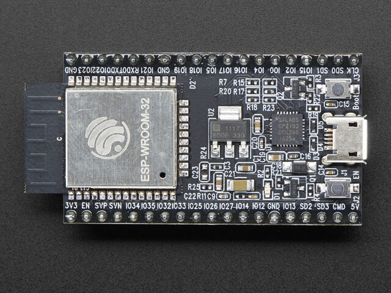

Quick reference for the ESP32¶
{kind=link}
The Espressif ESP32 Development Board (image attribution: Adafruit).
Below is a quick reference for ESP32-based boards. If it is your first time working with this board it may be useful to get an overview of the microcontroller:
Installing MicroPython¶
See the corresponding section of tutorial: Getting started with MicroPython on the ESP32. It also includes a troubleshooting subsection.
General board control¶
The MicroPython REPL is on UART0 (GPIO1=TX, GPIO3=RX) at baudrate 115200. Tab-completion is useful to find out what methods an object has. Paste mode (ctrl-E) is useful to paste a large slab of Python code into the REPL.
The machine module:
import machine
machine.freq() # get the current frequency of the CPU
machine.freq(240000000) # set the CPU frequency to 240 MHz
The esp module:
import esp
esp.osdebug(None) # turn off vendor O/S debugging messages
esp.osdebug(0) # redirect vendor O/S debugging messages to UART(0)
# low level methods to interact with flash storage
esp.flash_size()
esp.flash_user_start()
esp.flash_erase(sector_no)
esp.flash_write(byte_offset, buffer)
esp.flash_read(byte_offset, buffer)
The esp32 module:
import esp32
esp32.raw_temperature() # read the internal temperature of the MCU, in Fahrenheit
esp32.ULP() # access to the Ultra-Low-Power Co-processor
Note that the temperature sensor in the ESP32 will typically read higher than ambient due to the IC getting warm while it runs. This effect can be minimised by reading the temperature sensor immediately after waking up from sleep.
Networking¶
WLAN¶
The network module:
import network
wlan = network.WLAN(network.STA_IF) # create station interface
wlan.active(True) # activate the interface
wlan.scan() # scan for access points
wlan.isconnected() # check if the station is connected to an AP
wlan.connect('ssid', 'key') # connect to an AP
wlan.config('mac') # get the interface's MAC address
wlan.ifconfig() # get the interface's IP/netmask/gw/DNS addresses
ap = network.WLAN(network.AP_IF) # create access-point interface
ap.config(ssid='ESP-AP') # set the SSID of the access point
ap.config(max_clients=10) # set how many clients can connect to the network
ap.active(True) # activate the interface
A useful function for connecting to your local WiFi network is:
def do_connect():
import network
wlan = network.WLAN(network.STA_IF)
wlan.active(True)
if not wlan.isconnected():
print('connecting to network...')
wlan.connect('ssid', 'key')
while not wlan.isconnected():
pass
print('network config:', wlan.ifconfig())
Once the network is established the socket module can be used
to create and use TCP/UDP sockets as usual, and the requests module for
convenient HTTP requests.
After a call to wlan.connect(), the device will by default retry to connect
forever, even when the authentication failed or no AP is in range.
wlan.status() will return network.STAT_CONNECTING in this state until a
connection succeeds or the interface gets disabled. This can be changed by
calling wlan.config(reconnects=n), where n are the number of desired reconnect
attempts (0 means it won’t retry, -1 will restore the default behaviour of trying
to reconnect forever).
LAN¶
To use the wired interfaces one has to specify the pins and mode
import network
lan = network.LAN(mdc=PIN_MDC, ...) # Set the pin and mode configuration
lan.active(True) # activate the interface
lan.ifconfig() # get the interface's IP/netmask/gw/DNS addresses
The keyword arguments for the constructor defining the PHY type and interface are:
mdc=pin-object # set the mdc and mdio pins.
mdio=pin-object
power=pin-object # set the pin which switches the power of the PHY device.
phy_type=<type> # Select the PHY device type. Supported devices are PHY_LAN8710, PHY_LAN8720, PH_IP101, PHY_RTL8201, PHY_DP83848 and PHY_KSZ8041
phy_addr=number # The address number of the PHY device.
ref_clk_mode=mode # Defines, whether the ref_clk at the ESP32 is an input or output. Suitable values are Pin.IN and Pin.OUT.
ref_clk=pin-object # defines the Pin used for ref_clk.
These are working configurations for LAN interfaces of popular boards:
# Olimex ESP32-GATEWAY: power controlled by Pin(5)
# Olimex ESP32 PoE and ESP32-PoE ISO: power controlled by Pin(12)
lan = network.LAN(mdc=machine.Pin(23), mdio=machine.Pin(18), power=machine.Pin(5),
phy_type=network.PHY_LAN8720, phy_addr=0,
ref_clk=machine.Pin(17), ref_clk_mode=machine.Pin.OUT)
# Wireless-Tag's WT32-ETH01
lan = network.LAN(mdc=machine.Pin(23), mdio=machine.Pin(18),
phy_type=network.PHY_LAN8720, phy_addr=1, power=None)
# Wireless-Tag's WT32-ETH01 v1.4
lan = network.LAN(mdc=machine.Pin(23), mdio=machine.Pin(18),
phy_type=network.PHY_LAN8720, phy_addr=1,
power=machine.Pin(16))
# Espressif ESP32-Ethernet-Kit_A_V1.2
lan = network.LAN(id=0, mdc=Pin(23), mdio=Pin(18), power=Pin(5),
phy_type=network.PHY_IP101, phy_addr=1)
Delay and timing¶
Use the time module:
import time
time.sleep(1) # sleep for 1 second
time.sleep_ms(500) # sleep for 500 milliseconds
time.sleep_us(10) # sleep for 10 microseconds
start = time.ticks_ms() # get millisecond counter
delta = time.ticks_diff(time.ticks_ms(), start) # compute time difference
Timers¶
The ESP32 port has four hardware timers. Use the machine.Timer class with a timer ID from 0 to 3 (inclusive):
from machine import Timer
tim0 = Timer(0)
tim0.init(period=5000, mode=Timer.ONE_SHOT, callback=lambda t:print(0))
tim1 = Timer(1)
tim1.init(period=2000, mode=Timer.PERIODIC, callback=lambda t:print(1))
The period is in milliseconds.
Virtual timers are not currently supported on this port.
Pins and GPIO¶
Use the machine.Pin class:
from machine import Pin
p0 = Pin(0, Pin.OUT) # create output pin on GPIO0
p0.on() # set pin to "on" (high) level
p0.off() # set pin to "off" (low) level
p0.value(1) # set pin to on/high
p2 = Pin(2, Pin.IN) # create input pin on GPIO2
print(p2.value()) # get value, 0 or 1
p4 = Pin(4, Pin.IN, Pin.PULL_UP) # enable internal pull-up resistor
p5 = Pin(5, Pin.OUT, value=1) # set pin high on creation
p6 = Pin(6, Pin.OUT, drive=Pin.DRIVE_3) # set maximum drive strength
Available Pins are from the following ranges (inclusive): 0-19, 21-23, 25-27, 32-39. These correspond to the actual GPIO pin numbers of ESP32 chip. Note that many end-user boards use their own adhoc pin numbering (marked e.g. D0, D1, …). For mapping between board logical pins and physical chip pins consult your board documentation.
Four drive strengths are supported, using the drive keyword argument to the
Pin() constructor or Pin.init() method, with different corresponding
safe maximum source/sink currents and approximate internal driver resistances:
Pin.DRIVE_0: 5mA / 130 ohm
Pin.DRIVE_1: 10mA / 60 ohm
Pin.DRIVE_2: 20mA / 30 ohm (default strength if not configured)
Pin.DRIVE_3: 40mA / 15 ohm
The hold= keyword argument to Pin() and Pin.init() will enable the
ESP32 “pad hold” feature. When set to True, the pin configuration
(direction, pull resistors and output value) will be held and any further
changes (including changing the output level) will not be applied. Setting
hold=False will immediately apply any outstanding pin configuration changes
and release the pin. Using hold=True while a pin is already held will apply
any configuration changes and then immediately reapply the hold.
Notes:
Pins 1 and 3 are REPL UART TX and RX respectively
Pins 6, 7, 8, 11, 16, and 17 are used for connecting the embedded flash, and are not recommended for other uses
Pins 34-39 are input only, and also do not have internal pull-up resistors
See Deep-sleep mode for a discussion of pin behaviour during sleep
There’s a higher-level abstraction machine.Signal
which can be used to invert a pin. Useful for illuminating active-low LEDs
using on() or value(1).
UART (serial bus)¶
See machine.UART.
from machine import UART
uart1 = UART(1, baudrate=9600, tx=33, rx=32)
uart1.write('hello') # write 5 bytes
uart1.read(5) # read up to 5 bytes
The ESP32 has three hardware UARTs: UART0, UART1 and UART2. They each have default GPIO assigned to them, however depending on your ESP32 variant and board, these pins may conflict with embedded flash, onboard PSRAM or peripherals.
Any GPIO can be used for hardware UARTs using the GPIO matrix, except for
input-only pins 34-39 that can be used as rx. To avoid conflicts simply
provide tx and rx pins when constructing. The default pins listed
below.
UART0 |
UART1 |
UART2 |
|
|---|---|---|---|
tx |
1 |
10 |
17 |
rx |
3 |
9 |
16 |
PWM (pulse width modulation)¶
PWM can be enabled on all output-enabled pins. The base frequency can range from 1Hz to 40MHz but there is a tradeoff; as the base frequency increases the duty resolution decreases. See LED Control for more details.
Use the machine.PWM class:
from machine import Pin, PWM
pwm0 = PWM(Pin(0), freq=5000, duty_u16=32768) # create PWM object from a pin
freq = pwm0.freq() # get current frequency
pwm0.freq(1000) # set PWM frequency from 1Hz to 40MHz
duty = pwm0.duty() # get current duty cycle, range 0-1023 (default 512, 50%)
pwm0.duty(256) # set duty cycle from 0 to 1023 as a ratio duty/1023, (now 25%)
duty_u16 = pwm0.duty_u16() # get current duty cycle, range 0-65535
pwm0.duty_u16(2**16*3//4) # set duty cycle from 0 to 65535 as a ratio duty_u16/65535, (now 75%)
duty_ns = pwm0.duty_ns() # get current pulse width in ns
pwm0.duty_ns(250_000) # set pulse width in nanoseconds from 0 to 1_000_000_000/freq, (now 25%)
pwm0.deinit() # turn off PWM on the pin
pwm2 = PWM(Pin(2), freq=20000, duty=512) # create and configure in one go
print(pwm2) # view PWM settings
ESP chips have different hardware peripherals:
Hardware specification |
ESP32 |
ESP32-S2 |
ESP32-C3 |
Number of groups (speed modes) |
2 |
1 |
1 |
Number of timers per group |
4 |
4 |
4 |
Number of channels per group |
8 |
8 |
6 |
Different PWM frequencies (groups * timers) |
8 |
4 |
4 |
Total PWM channels (Pins, duties) (groups * channels) |
16 |
8 |
6 |
A maximum number of PWM channels (Pins) are available on the ESP32 - 16 channels, but only 8 different PWM frequencies are available, the remaining 8 channels must have the same frequency. On the other hand, 16 independent PWM duty cycles are possible at the same frequency.
See more examples in the Pulse Width Modulation tutorial.
DAC (digital to analog conversion)¶
On the ESP32, DAC functionality is available on pins 25, 26. On the ESP32S2, DAC functionality is available on pins 17, 18.
Use the DAC:
from machine import DAC, Pin
dac = DAC(Pin(25)) # create an DAC object acting on a pin
dac.write(128) # set a raw analog value in the range 0-255, 50% now
ADC (analog to digital conversion)¶
On the ESP32, ADC functionality is available on pins 32-39 (ADC block 1) and pins 0, 2, 4, 12-15 and 25-27 (ADC block 2).
Use the machine.ADC class:
from machine import ADC
adc = ADC(pin) # create an ADC object acting on a pin
val = adc.read_u16() # read a raw analog value in the range 0-65535
val = adc.read_uv() # read an analog value in microvolts
ADC block 2 is also used by WiFi and so attempting to read analog values from block 2 pins when WiFi is active will raise an exception.
The internal ADC reference voltage is typically 1.1V, but varies slightly from
package to package. The ADC is less linear close to the reference voltage
(particularly at higher attenuations) and has a minimum measurement voltage
around 100mV, voltages at or below this will read as 0. To read voltages
accurately, it is recommended to use the read_uv() method (see below).
ESP32-specific ADC class method reference:
- class ADC(pin, *, atten)¶
Return the ADC object for the specified pin. ESP32 does not support different timings for ADC sampling and so the
sample_nskeyword argument is not supported.To read voltages above the reference voltage, apply input attenuation with the
attenkeyword argument. Valid values (and approximate linear measurement ranges) are:ADC.ATTN_0DB: No attenuation (100mV - 950mV)ADC.ATTN_2_5DB: 2.5dB attenuation (100mV - 1250mV)ADC.ATTN_6DB: 6dB attenuation (150mV - 1750mV)ADC.ATTN_11DB: 11dB attenuation (150mV - 2450mV)
Warning
Note that the absolute maximum voltage rating for input pins is 3.6V. Going near to this boundary risks damage to the IC!
- ADC.read_uv()¶
This method uses the known characteristics of the ADC and per-package eFuse values - set during manufacture - to return a calibrated input voltage (before attenuation) in microvolts. The returned value has only millivolt resolution (i.e., will always be a multiple of 1000 microvolts).
The calibration is only valid across the linear range of the ADC. In particular, an input tied to ground will read as a value above 0 microvolts. Within the linear range, however, more accurate and consistent results will be obtained than using
read_u16()and scaling the result with a constant.
The ESP32 port also supports the machine.ADC API:
- class ADCBlock(id, *, bits)¶
Return the ADC block object with the given
id(1 or 2) and initialize it to the specified resolution (9 to 12-bits depending on the ESP32 series) or the highest supported resolution if not specified.
- ADCBlock.connect(pin)¶
- ADCBlock.connect(channel)
- ADCBlock.connect(channel, pin)
Return the
ADCobject for the specified ADC pin or channel number. Arbitrary connection of ADC channels to GPIO is not supported and so specifying a pin that is not connected to this block, or specifying a mismatched channel and pin, will raise an exception.
Legacy methods:
- ADC.read()¶
This method returns the raw ADC value ranged according to the resolution of the block, e.g., 0-4095 for 12-bit resolution.
- ADC.atten(atten)¶
Equivalent to
ADC.init(atten=atten).
- ADC.width(bits)¶
Equivalent to
ADC.block().init(bits=bits).
For compatibility, the ADC object also provides constants matching the
supported ADC resolutions:
ADC.WIDTH_9BIT= 9
ADC.WIDTH_10BIT= 10
ADC.WIDTH_11BIT= 11
ADC.WIDTH_12BIT= 12
Software SPI bus¶
Software SPI (using bit-banging) works on all pins, and is accessed via the machine.SoftSPI class:
from machine import Pin, SoftSPI
# construct a SoftSPI bus on the given pins
# polarity is the idle state of SCK
# phase=0 means sample on the first edge of SCK, phase=1 means the second
spi = SoftSPI(baudrate=100000, polarity=1, phase=0, sck=Pin(0), mosi=Pin(2), miso=Pin(4))
spi.init(baudrate=200000) # set the baudrate
spi.read(10) # read 10 bytes on MISO
spi.read(10, 0xff) # read 10 bytes while outputting 0xff on MOSI
buf = bytearray(50) # create a buffer
spi.readinto(buf) # read into the given buffer (reads 50 bytes in this case)
spi.readinto(buf, 0xff) # read into the given buffer and output 0xff on MOSI
spi.write(b'12345') # write 5 bytes on MOSI
buf = bytearray(4) # create a buffer
spi.write_readinto(b'1234', buf) # write to MOSI and read from MISO into the buffer
spi.write_readinto(buf, buf) # write buf to MOSI and read MISO back into buf
Warning
Currently all of sck, mosi and miso must be specified when
initialising Software SPI.
Hardware SPI bus¶
There are two hardware SPI channels that allow faster transmission rates (up to 80Mhz). These may be used on any IO pins that support the required direction and are otherwise unused (see Pins and GPIO) but if they are not configured to their default pins then they need to pass through an extra layer of GPIO multiplexing, which can impact their reliability at high speeds. Hardware SPI channels are limited to 40MHz when used on pins other than the default ones listed below.
HSPI (id=1) |
VSPI (id=2) |
|
|---|---|---|
sck |
14 |
18 |
mosi |
13 |
23 |
miso |
12 |
19 |
Hardware SPI is accessed via the machine.SPI class and has the same methods as software SPI above:
from machine import Pin, SPI
hspi = SPI(1, 10000000)
hspi = SPI(1, 10000000, sck=Pin(14), mosi=Pin(13), miso=Pin(12))
vspi = SPI(2, baudrate=80000000, polarity=0, phase=0, bits=8, firstbit=0, sck=Pin(18), mosi=Pin(23), miso=Pin(19))
Software I2C bus¶
Software I2C (using bit-banging) works on all output-capable pins, and is accessed via the machine.SoftI2C class:
from machine import Pin, SoftI2C
i2c = SoftI2C(scl=Pin(5), sda=Pin(4), freq=100000)
i2c.scan() # scan for devices
i2c.readfrom(0x3a, 4) # read 4 bytes from device with address 0x3a
i2c.writeto(0x3a, '12') # write '12' to device with address 0x3a
buf = bytearray(10) # create a buffer with 10 bytes
i2c.writeto(0x3a, buf) # write the given buffer to the peripheral
Hardware I2C bus¶
There are two hardware I2C peripherals with identifiers 0 and 1. Any available output-capable pins can be used for SCL and SDA but the defaults are given below.
I2C(0) |
I2C(1) |
|
|---|---|---|
scl |
18 |
25 |
sda |
19 |
26 |
The driver is accessed via the machine.I2C class and has the same methods as software I2C above:
from machine import Pin, I2C
i2c = I2C(0)
i2c = I2C(1, scl=Pin(5), sda=Pin(4), freq=400000)
I2S bus¶
See machine.I2S.
from machine import I2S, Pin
i2s = I2S(0, sck=Pin(13), ws=Pin(14), sd=Pin(34), mode=I2S.TX, bits=16, format=I2S.STEREO, rate=44100, ibuf=40000) # create I2S object
i2s.write(buf) # write buffer of audio samples to I2S device
i2s = I2S(1, sck=Pin(33), ws=Pin(25), sd=Pin(32), mode=I2S.RX, bits=16, format=I2S.MONO, rate=22050, ibuf=40000) # create I2S object
i2s.readinto(buf) # fill buffer with audio samples from I2S device
The I2S class is currently available as a Technical Preview. During the preview period, feedback from users is encouraged. Based on this feedback, the I2S class API and implementation may be changed.
ESP32 has two I2S buses with id=0 and id=1
Real time clock (RTC)¶
See machine.RTC
from machine import RTC
rtc = RTC()
rtc.datetime((2017, 8, 23, 1, 12, 48, 0, 0)) # set a specific date and time
rtc.datetime() # get date and time
WDT (Watchdog timer)¶
See machine.WDT.
from machine import WDT
# enable the WDT with a timeout of 5s (1s is the minimum)
wdt = WDT(timeout=5000)
wdt.feed()
Deep-sleep mode¶
The following code can be used to sleep, wake and check the reset cause:
import machine
# check if the device woke from a deep sleep
if machine.reset_cause() == machine.DEEPSLEEP_RESET:
print('woke from a deep sleep')
# put the device to sleep for 10 seconds
machine.deepsleep(10000)
Notes:
Calling
deepsleep()without an argument will put the device to sleep indefinitelyA software reset does not change the reset cause
Some ESP32 pins (0, 2, 4, 12-15, 25-27, 32-39) are connected to the RTC during
deep-sleep and can be used to wake the device with the wake_on_ functions in
the esp32 module. The output-capable RTC pins (all except 34-39) will
also retain their pull-up or pull-down resistor configuration when entering
deep-sleep.
If the pull resistors are not actively required during deep-sleep and are likely to cause current leakage (for example a pull-up resistor is connected to ground through a switch), then they should be disabled to save power before entering deep-sleep mode:
from machine import Pin, deepsleep
# configure input RTC pin with pull-up on boot
pin = Pin(2, Pin.IN, Pin.PULL_UP)
# disable pull-up and put the device to sleep for 10 seconds
pin.init(pull=None)
machine.deepsleep(10000)
Output-configured RTC pins will also retain their output direction and level in
deep-sleep if pad hold is enabled with the hold=True argument to
Pin.init().
Non-RTC GPIO pins will be disconnected by default on entering deep-sleep. Configuration of non-RTC pins - including output level - can be retained by enabling pad hold on the pin and enabling GPIO pad hold during deep-sleep:
from machine import Pin, deepsleep
import esp32
opin = Pin(19, Pin.OUT, value=1, hold=True) # hold output level
ipin = Pin(21, Pin.IN, Pin.PULL_UP, hold=True) # hold pull-up
# enable pad hold in deep-sleep for non-RTC GPIO
esp32.gpio_deep_sleep_hold(True)
# put the device to sleep for 10 seconds
deepsleep(10000)
The pin configuration - including the pad hold - will be retained on wake from sleep. See Pins and GPIO above for a further discussion of pad holding.
SD card¶
See machine.SDCard.
import machine, os
# Slot 2 uses pins sck=18, cs=5, miso=19, mosi=23
sd = machine.SDCard(slot=2)
os.mount(sd, '/sd') # mount
os.listdir('/sd') # list directory contents
os.umount('/sd') # eject
RMT¶
The RMT is ESP32-specific and allows generation of accurate digital pulses with 12.5ns resolution. See esp32.RMT for details. Usage is:
import esp32
from machine import Pin
r = esp32.RMT(0, pin=Pin(18), clock_div=8)
r # RMT(channel=0, pin=18, source_freq=80000000, clock_div=8)
# The channel resolution is 100ns (1/(source_freq/clock_div)).
r.write_pulses((1, 20, 2, 40), 0) # Send 0 for 100ns, 1 for 2000ns, 0 for 200ns, 1 for 4000ns
OneWire driver¶
The OneWire driver is implemented in software and works on all pins:
from machine import Pin
import onewire
ow = onewire.OneWire(Pin(12)) # create a OneWire bus on GPIO12
ow.scan() # return a list of devices on the bus
ow.reset() # reset the bus
ow.readbyte() # read a byte
ow.writebyte(0x12) # write a byte on the bus
ow.write('123') # write bytes on the bus
ow.select_rom(b'12345678') # select a specific device by its ROM code
There is a specific driver for DS18S20 and DS18B20 devices:
import time, ds18x20
ds = ds18x20.DS18X20(ow)
roms = ds.scan()
ds.convert_temp()
time.sleep_ms(750)
for rom in roms:
print(ds.read_temp(rom))
Be sure to put a 4.7k pull-up resistor on the data line. Note that
the convert_temp() method must be called each time you want to
sample the temperature.
NeoPixel and APA106 driver¶
Use the neopixel and apa106 modules:
from machine import Pin
from neopixel import NeoPixel
pin = Pin(0, Pin.OUT) # set GPIO0 to output to drive NeoPixels
np = NeoPixel(pin, 8) # create NeoPixel driver on GPIO0 for 8 pixels
np[0] = (255, 255, 255) # set the first pixel to white
np.write() # write data to all pixels
r, g, b = np[0] # get first pixel colour
The APA106 driver extends NeoPixel, but internally uses a different colour order:
from apa106 import APA106
ap = APA106(pin, 8)
r, g, b = ap[0]
Warning
By default NeoPixel is configured to control the more popular 800kHz
units. It is possible to use alternative timing to control other (typically
400kHz) devices by passing timing=0 when constructing the
NeoPixel object.
For low-level driving of a NeoPixel see machine.bitstream.
This low-level driver uses an RMT channel by default. To configure this see
RMT.bitstream_channel.
APA102 (DotStar) uses a different driver as it has an additional clock pin.
Capacitive touch¶
Use the TouchPad class in the machine module:
from machine import TouchPad, Pin
t = TouchPad(Pin(14))
t.read() # Returns a smaller number when touched
TouchPad.read returns a value relative to the capacitive variation. Small numbers (typically in
the tens) are common when a pin is touched, larger numbers (above one thousand) when
no touch is present. However the values are relative and can vary depending on the board
and surrounding composition so some calibration may be required.
There are ten capacitive touch-enabled pins that can be used on the ESP32: 0, 2, 4, 12, 13
14, 15, 27, 32, 33. Trying to assign to any other pins will result in a ValueError.
Note that TouchPads can be used to wake an ESP32 from sleep:
import machine
from machine import TouchPad, Pin
import esp32
t = TouchPad(Pin(14))
t.config(500) # configure the threshold at which the pin is considered touched
esp32.wake_on_touch(True)
machine.lightsleep() # put the MCU to sleep until a touchpad is touched
For more details on touchpads refer to Espressif Touch Sensor.
DHT driver¶
The DHT driver is implemented in software and works on all pins:
import dht
import machine
d = dht.DHT11(machine.Pin(4))
d.measure()
d.temperature() # eg. 23 (°C)
d.humidity() # eg. 41 (% RH)
d = dht.DHT22(machine.Pin(4))
d.measure()
d.temperature() # eg. 23.6 (°C)
d.humidity() # eg. 41.3 (% RH)
WebREPL (web browser interactive prompt)¶
WebREPL (REPL over WebSockets, accessible via a web browser) is an experimental feature available in ESP32 port. Download web client from https://github.com/micropython/webrepl (hosted version available at http://micropython.org/webrepl), and configure it by executing:
import webrepl_setup
and following on-screen instructions. After reboot, it will be available for connection. If you disabled automatic start-up on boot, you may run configured daemon on demand using:
import webrepl
webrepl.start()
# or, start with a specific password
webrepl.start(password='mypass')
The WebREPL daemon listens on all active interfaces, which can be STA or AP. This allows you to connect to the ESP32 via a router (the STA interface) or directly when connected to its access point.
In addition to terminal/command prompt access, WebREPL also has provision
for file transfer (both upload and download). The web client has buttons for
the corresponding functions, or you can use the command-line client
webrepl_cli.py from the repository above.
See the MicroPython forum for other community-supported alternatives to transfer files to an ESP32 board.